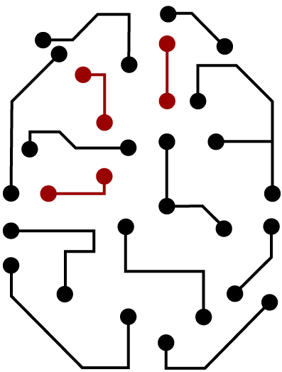

The North American Summer School in Logic, Language, and Information (NASSLLI) 2022 will be held June 18-24 at the University of Southern California, in Los Angeles. This will be the first in-person NASSLLI since 2018, and the first to offer fully synchronous online participation.
You can view our course and workshop listings, our accommodations options and registration rates and dates. The deadlines for applications for student grants, and calls for papers to the student session and the satellite workshop in higher-order logic and metaphysics have now closed. Registration for NASSLLI 2022 has now closed.
Alexis Wellwood is the director of NASSLLI 2022. The organizing committee is composed of Jeremy Goodman, Elsi Kaiser, Khalil Iskarous, Deniz Rudin, Jaime Castillo-Gamboa and Nurit Matuk-Blaustein. The student session committee is composed of Deniz Rudin, Jaime Castillo-Gamboa, Nurit Matuk-Blaustein, Luis Miguel Toquero-Perez and Lina Brixey.
Our in-person school will follow all local public health guidance regarding protecting against Covid-19 transmission, including USC’s policies on vaccination, testing and masking (see the latest guidance). We are offering a synchronous online option for those unable to participate in person.
Check out the European Summer School in Logic, Language, and Information (ESSLLI) which will be held August 8-19, 2022, at the National University of Ireland, Galway. The schools are separate, but share a focus on topics in logic, linguistics, and computer science.
